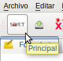
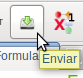
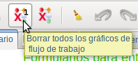
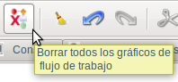
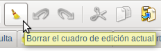
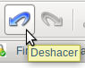
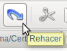
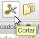
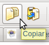
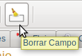

-
SAFET este botón se utiliza para regresar a la ventana principal.

Figura S4.1-1, Botón SAFET
-
Enviar este botón se utiliza para enviar las diferentes consultas realizadas

Figura S4.1-2, Botón Enviar
-
Borrar gráfico seleccionado este botón se utiliza para borrar el gráficos de flujos de trabajos seleccionado.

Figura S4.1-3, Botón borra todos los flujos de trabajo
-
Borrar todos los gráficos este botón se utiliza para borrar todos los gráficos de flujo de trabajo que en ese momento estén dibujado

figura S4.1-4, Botón borra flujo de trabajo seleccionado
-
Borrar todo el cuadro de edición este botón se utiliza para borrar toda las lineas de texto que se encuentra en el cuadro de edición

Figura S4.1-5, Botón que borra el cuadro de edición
-
Deshacer este botón se utiliza para deshacer las acciones realizadas

Figura S4.1-6, Botón Deshacer
-
Rehacer este botón se utiliza para rehacer las acciones realizadas

Figura S4.1-7, Botón Rehacer
-
Cortar este botón permite cortar una linea de texto seleccionada

Figura S4.1-8, Botón cortar
-
Copiar este botón permite copiar linea de texto seleccionada

Figura S4.1-9, Botón Copiar
-
Pegar este botón permite pegar linea de texto copiado

Figura S4.1-10, Botón Pegar
-
Borrar este botón permite borrar campo seleccionado.

Figura S4.1-11, Botón borra campo seleccionado